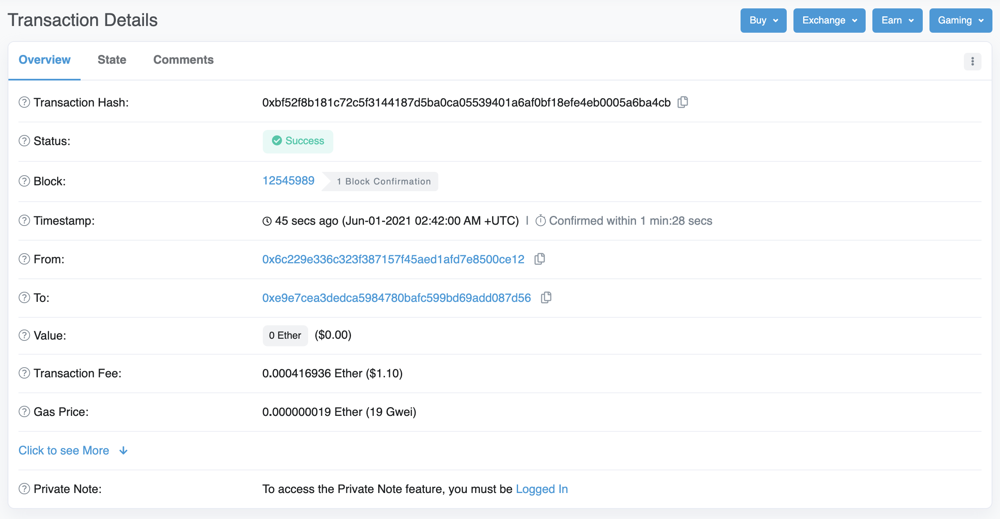

How do I use it¶
The core of Ethereum is the ability to send transactions easily, so here i’ll be walking you through the process of setting up your wallet and sending transactions with the most popular Ethereum Wallets.
- In addition to creating new wallets, which i’m going to skip over due to an easy to follow interface, there are 3 ways you can access a wallet:
- Mnemonic Phrase (with optional extra password)
- Private Key
- Keystore File
The private key is the direct key that is generated from your mnemonic phrase, bypassing its need alltogether. This is not recommended due to its difficulty in proper storage.
The keystore is a JSON file, created by the application at wallet creation, that holds the necesarry info to derive your keys. It is encrypted with a password you choose. It is not recommended either, due to its difficulty in storage and should only be used in offline settings by experienced users.
Disclaimer¶
I have NOT been compensated for the promotion of any Ethereum related service or application, I’m just a fan.
I am NOT liable for any data that may be stolen, funds that may be lost, accidents that may occur, or anything else due to the improper use of these services or applications. Use at your own risk.
Wallet Creation¶
- I recommend setting up your wallet with any of the following sources:
- Metamask - A browser wallet operating as a chrome-extension, or a mobile application.
- MyEtherWallet - A browser wallet operating out of a website.
- MyCrypto App - Desktop Application and Website Wallet.
If you plan on using your Cryptocurrency frequently, I recommend using Metamask, as it will easily allow you to send and receive.
It is highly recommended you generate your wallet keys on an air-gapped machine. This is one not connected to the internet. This is to ensure that malicious actors are not secretly observing your actions while generating your keys, and therefore able to steal them.
It does not matter which application you use to generate your wallet from, as you will be able to import them to another at any given time.
Be sure to store your keys in a safe place, and back them up thoroughly. See Here for advice.
Metamask¶
Metamask, is arguably the most versatile of all wallet applications. Its main version is a Google-Chrome-Extension that allows you to access your cryptocurrency whenever you use the web, simply by clicking on the extension. It gives you access to send and receive with incredible ease. Simply simply download the program and follow the steps to set up your wallet, and then add it to your toolbar. When you visit a website that is configured for metamask, it use the information available to it to create new transactions and send them for you.
It’s as easy as clicking a button. Install metamask and click the button below to see!
Your Address:
By clicking on the little fox icon in your browser, you can see a homepage with information such as your balances, buttons to receive where you can view your address, send transactions, etc.

When you want to send a transaction simply click on send, input the address you would like to send it to and click send! Metamask will automatically calculate transaction fees for you and provide various options based on current fee levels. However, if you’re an experienced user you can specify this yourself. Simply click through the screens and have your transaction initiated.

If you’re using a complicated Dapp, such as Uniswap, this information will be filled in for you. When you use their site they will automatically fill out the transaction information for you, complete with necesarry contract data. Just wait for the window to pop up, double-check the info, and click send.
For security reasons, it is suggested you alter metamask settings slightly. In your browser you should change the setting under “This can read and change site data” from On All Sites to When you click the extension. Metamask by default has this setting, which allows any website to access its features. Given that metamask can do things like view and alter things you copy, there lies the potential for drive-by attacks on malicious websites. By changing it to only have access when you click, this gives only selected sites access to metamask, when you click. This is best both for privacy and security.
All images sourced from Metamask
MyEtherWallet¶
MyEtherWallet is an online website allowing you to perform many functions with your ethereum wallet. It does NOT store any data about you or your keys, meaning you have to resupply them every time you wish to use its services. The interface is fantastic for creating new wallets and importing old ones with a variety of methods. If you plan on interacting with a smart contract where the transaction is not generated for you by the Dapp, MyEtherWallet is a great way to do so.
Example Transaction with MyEtherWallet¶
Once you access your wallet and are dropped into the homepage, we can make a transaction. I’m going to walk you through 2: sending to another user, and interacting with a contract.
- Simple Transaction:
Click around on the menu and the sidebar until you find Send Transaction and go to that page. You should see the following

On this page, you enter the same information you would on metamask: recipient, amount, transaction fee, etc. There is also a dropdown under ETH in case you want to send a token instead of Ether. You can edit the transaction fee, however it is automatically generated to be an average of other recent transactions. All you have to do is then click send.
- Contract Interactions:
Click around on the sidebar until you find Contract->Interact with Contract. You will be prompted to input two things: an address, and an ABI. The ABI is essentially a schematic, of all the functions in the contract. Knowing this information will help your wallet correctly solicit the required inputs and form the transaction. If you know the contract address, finding the ABI is very simple. You simply go to etherscan.io, and input the contract address. Then click on the contract tab and scroll down until you find Contract ABI. It should look something like this:

Copy this information and then input it back into the MyEtherWallet page. Once MyEtherWallet has this information, you can select a function you would like to execute from the dropdown list. Then all you have to do is fill out the form with the required inputs. The site will form the transaction for you and all you have to do is confirm it.

All Images sourced from MyEtherWallet
Etherscan¶
Once your transaction has been initiated, you can view its status and information about it online, at a block explorer. Your wallet should give you a transaction hash, a long hex string of numbers and letters to identify it. Simply go to etherscan.io and in the bar put in your transaction hash, and view all the information.
{kind=link}
You can also view the transaction history of any address including contract execution history. Simply input it into the search bar

All images sourced from Etherscan.io
Ethereum Name Service (ENS)¶
Although not a direct part of the Etheruem protocol, I’m discussing it here because it’s an invaluable part. The Ethereum Name Service (ENS) functions in the same way the Domain Name System (DNS) works for internet addresses. It is used to convert your Ethereum address into a unique and human-readable string.
For example: the address of Ethereum creator Vitalik Buterin is 0xd8da6bf26964af9d7eed9e03e53415d37aa96045
Using the Ethereum Name Service, you can simply type Vitalik.eth into any ENS-enabled wallet, and see the above address automatically be inserted.
The system functions through an on-chain smart contract, where each address is registered and represented by an NFT. You register your name by interacting with the contract through their website.
If you have an address you plan on using for a long time or soliciting payments, I highly suggest registering your domain, and can be done for very cheap.

Image Source: Metamask